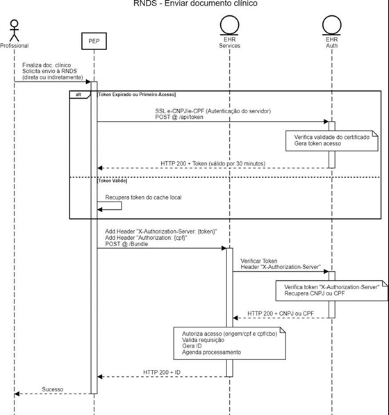

Guia de Implementação do RAC da RNDS
0.1.0 - CI Build

Guia de Implementação do RAC da RNDS
0.1.0 - CI Build

Guia de Implementação do RAC da RNDS - Local Development build (v0.1.0) built by the FHIR (HL7® FHIR® Standard) Build Tools. See the Directory of published versions
| Página de status do padrão: Informative |
Para garantir a interoperabilidade entre as aplicações de Saúde Digital, em especial Prontuário(s) Eletrônico(s) do Paciente, portais e aplicações (web e mobile), a troca de informações ocorre por meio de serviços (web services) RESTful, desenvolvidos de acordo com o padrão FHIR R4.
A seguir estão listados os serviços que irão auxiliar no envio da informação principal, o Registro de Atendimento Clínico.
| Serviço | Componente | Objetivo |
| GET@/fhir/r4/Patient | EHR Services | Permitir a pesquisa de pacientes |
| GET@/fhir/r4/Organization | EHR Services | Permitir a pesquisa de estabelecimentos de Saúde |
| GET@/fhir/r4/Practitioner | EHR Services | Permitir a pesquisa de profissionais de saúde |
| GET@/fhir/r4/PractitionerRole | EHR Services | Permitir a pesquisa de perfis de profissionais de Saúde |
Em relação ao serviço GET@/fhir/r4/Patient, quando não for possível captar o CPF ou CNS do cidadão/paciente, é importante que o sistema/solução capture os dados demográficos do usuário por meio eletrônico ou físico (nas fichas de registro regular do caso de uso). Desta forma, será possível realizar a busca demográfica ou a criação do CNS (CADSUS inserir endereço eletrônico) a ser utilizado como identificador do paciente no documento eletrônico.
A seguir estão listados os serviços que deverão ser usados para o envio ou consulta da informação principal, o Registro de Atendimento Clínico.
| Serviço | Componente | Objetivo |
| POST@/token | EHR Auth | Permitir autenticação com Certificado Digital do tipo e-CNPJ ou e-CPF (ICP Brasil) |
| POST@/fhir/r4/Bundle | EHR Services | Permitir o envio (inclusão) de um documento clínico. Neste caso, é o Registro de Atendimento Clínico |
| POST@/contexto-atendimento | EHR Services | Permitir a geração de um contexto de atendimento. Necessário para consultar documentos clínicos por meio do Conecte SUS Profissional |
| DELETE@/fhir/r4/Bundle | EHR Services | Permitir a exclusão (delete) de um documento clínico |
Recomenda-se que a transação para exclusão de registros (DELETE) somente seja efetuada nas seguintes situações:
Como critério de segurança para efetivar a exclusão, será mantida a estrutura atual presente no FHIR, ou seja, o sistema de autorização irá considerar: UF, CNES, identificador do sistema (identifier.system) e o autor do documento (author). A estrutura FHIR deverá previamente verificar a existência do documento antes de realizar a ação de exclusão. Caso seja detectado que o documento não existe, a requisição será cancelada e apresentará o erro 404.
O status do documento excluído será (entered-in-error) e o status do documento válido será (Final). Este registro não aparecerá mais nos resultados da pesquisa e as tentativas de ler o recurso falharão com uma resposta "HTTP 410 Gone" (ver 11.1 exemplos de consumo dos serviços).
No diagrama de sequência, disposto na Figura 1, está descrito o fluxo para envio de um documento clínico.
